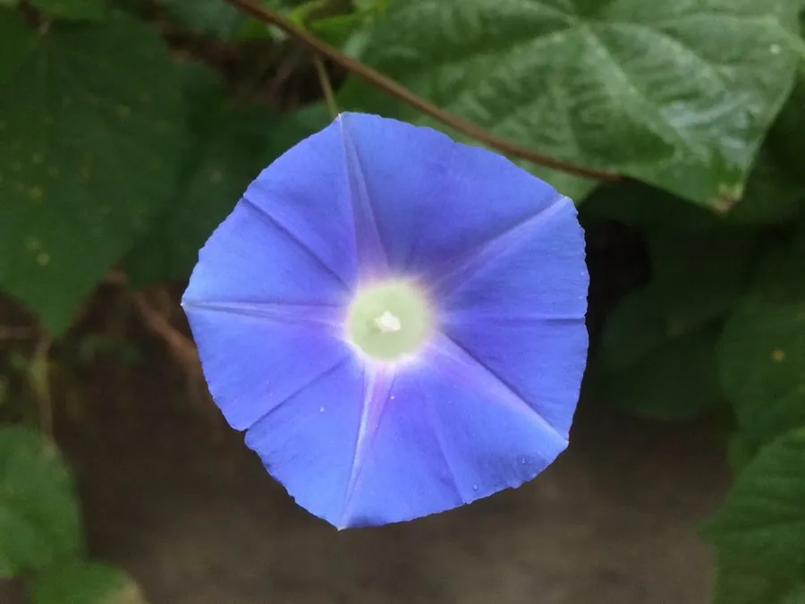

花卉与草本 · 植物界
牵牛花 Ipomoea nil

旋花科番薯属一年生缠绕草本，花冠漏斗状似喇叭，清晨开放、午后凋谢，是夏日篱笆上最常见的藤本花卉。
- 分类
- 门被子植物门纲木兰纲目茄目科旋花科属番薯属
- 栖息环境
- 篱笆、路旁与荒地，喜光喜温、耐旱耐瘠薄
- 地理分布
- 原产热带美洲；中国各地普遍栽培并常见逸生
- 保护级别
- 暂无评估；栽培与逸生植物，不涉及保护等级
物种志
牵牛花为旋花科番薯属一年生缠绕草本，茎细长，左旋缠绕，被短柔毛。叶片互生，心形或三裂，表面被毛。花单生于叶腋，花冠漏斗状，形似喇叭，颜色有蓝、紫、红、白及复色，花期六月至十月，清晨开放、午后闭合凋谢；蒴果球形，成熟时开裂，种子黑色，果期八月至十一月。
牵牛花原产热带美洲，中国各地普遍栽培，常逸生于篱笆、路旁和荒地。它喜光、喜温暖，耐旱、耐瘠薄，对土壤要求不严，自播能力强。花清晨开放、午后凋谢，因此在日本被称为朝颜；花色丰富、攀援性强，是篱笆、棚架和阳台绿化的常用藤本花卉。种子在中药中称牵牛子，有泻下逐水之效，但有毒，需遵医嘱使用。
形态与习性
- 株高缠绕藤本，茎长可达 3 m
- 花期6–10 月，清晨开放
- 果期8–11 月，蒴果球形
- 光照喜光，全日照开花多
- 水分耐旱，忌积水
- 土壤疏松壤土，耐瘠薄
- 主要用途篱笆棚架绿化，种子入药
趣味知识
- 牵牛花的花冠呈漏斗状，像一支支小喇叭，因此又名喇叭花。
- 它的花清晨绽放、午后凋谢，日本称之为朝颜，并培育出众多品种。
- 牵牛花的茎具有左旋缠绕的特性，总是逆时针攀爬支架。